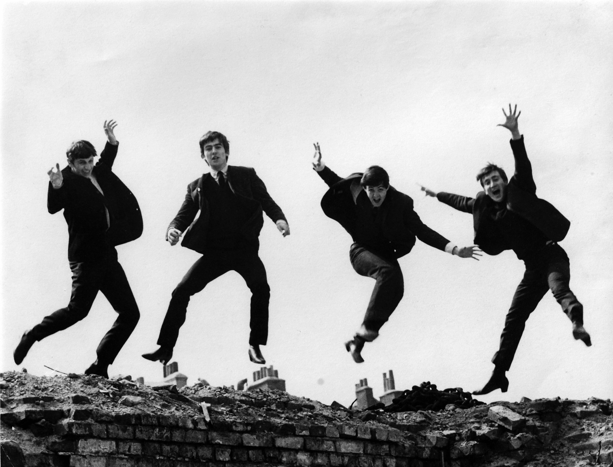
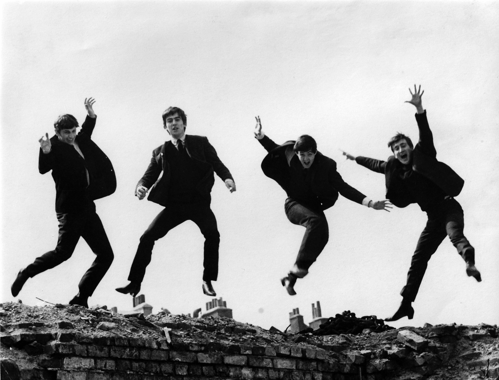

Integrantes
Breve reseña
The Beatles (pronunciado [ðə ˈbiːɾəlz]) fue una banda de rock2 inglesa activa durante la década de 1960, y reconocida como la más exitosa comercialmente y la más alabada por la crítica en la historia de la música popular y de la música rock.34567 Formada en Liverpool, estuvo constituida desde 1962 por John Lennon (guitarra rítmica, vocalista), Paul McCartney (bajo, vocalista), George Harrison (guitarra solista, vocalista) y Ringo Starr (batería, vocalista). Enraizada en el skiffle y el rock and roll de los años 1950, la banda trabajó más tarde con distintos géneros musicales, tales como rock and roll y pop de los años 1950, rock pop, música beat, folk rock, rock psicodélico hasta hard rock, incorporando a menudo elementos clásicos, entre otros, de forma innovadora en sus canciones. La naturaleza de su enorme popularidad, que había emergido primeramente con la moda de la «beatlemanía», se transformó al tiempo que sus composiciones se volvieron más sofisticadas. Llegaron a ser percibidos como la encarnación de los ideales progresistas, extendiendo su influencia en las revoluciones sociales y culturales de la década de 1960. Inicialmente se trató de un grupo de estilo skiffle, integrado por adolescentes en etapa escolar, fundado en 1956 por Lennon durante la llamada "locura del skiffle" (skiffle craze) en Gran Bretaña, con el nombre de The Quarry Men, al que luego se sumaron McCartney y Harrison. Luego de varios cambios de integrantes y nombres, decantó en The Beatles, con una formación de cinco miembros que incluía a Lennon, McCartney, Harrison, Stuart Sutcliffe (bajo) y Pete Best (batería). Construyó su reputación en los clubes de Liverpool y Hamburgo sobre un período de tres años a partir de 1960. Sutcliffe abandonó la formación en 1961, y Best fue reemplazado por Starr al año siguiente. Establecidos como grupo profesional después de que Brian Epstein les ofreciera ser su representante, y con su potencial musical mejorado por la creatividad del productor George Martin, lograron éxito comercial en el Reino Unido a finales de 1962 con su primer sencillo, «Love Me Do». A partir de ahí, fueron adquiriendo popularidad internacional a lo largo de los siguientes años, en los cuales hicieron un extenso número de giras hasta 1966, año en que cesaron la actividad en vivo para dedicarse únicamente a la grabación en el estudio hasta su disolución en 1970. Después, todos sus integrantes se embarcaron en exitosas carreras independientes de diversa duración. Lennon sería asesinado a las afueras de su casa de Nueva York en 1980, y Harrison fallecería de cáncer en 2001. McCartney y Starr, los dos miembros sobrevivientes, aún permanecen musicalmente activos. Durante sus años de estudio crearon algunos de sus mejores materiales, incluyendo el álbum Sgt. Pepper's Lonely Hearts Club Band (1967), considerado por muchos como una obra maestra. Cinco décadas después de su separación, la música que crearon continúa siendo popular. Se mantienen como el grupo con más números uno en las listas británicas, situando más álbumes en esta posición que cualquier otra agrupación musical.8 De acuerdo con las certificaciones de la RIAA, han vendido más discos en los Estados Unidos que cualquier otro artista.6 Fueron galardonados con siete premios Grammy,9 y recibieron un total de quince premios Ivor Novello de parte de la British Academy of Songwriters, Composers and Authors.10 En 2004, la revista Rolling Stone los clasificó en el número uno en su lista de los «100 artistas más grandes de todos los tiempos».3 De acuerdo con la misma publicación, la música innovadora de The Beatles y su impacto cultural ayudaron a definir los años 1960.11 En 2010, el canal de televisión especializado en música VH1 los clasificó en el número uno en su lista de los «100 artistas más grandes de todos los tiempos».12 También fueron colocados en el puesto número 1 por el sitio de Internet Acclaimed Music en su lista «The Top 1000 Artists of All Time».4 Figuran, asimismo, en la primera posición como los más grandes artistas de todos los tiempos de las listas Hot 100 y Billboard 200 en la clasificación de Billboard de 2015.1314
Discografia
- Pleaseplease me - 1963
- With the Beatles - 1963
- Twist and Shout - 1964
- A Hard day's night - 1964
- Rubber Soul - 1965
- Revolver - 1966
- Etc...
5 canciones mas populares segun Spotify
- Let it be
- Here comes the sun
- Hey Jude
- Twist and Shout
- Come Together
Galeria